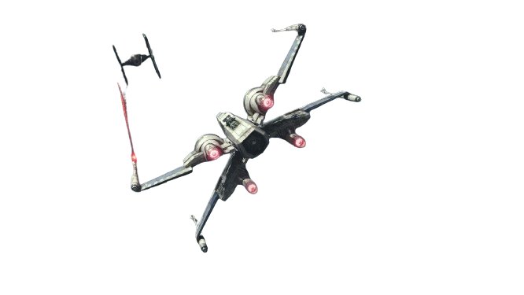

|
The Luke Lopez Page |
Home Page |
Contact/Information |
|---|
Past Projects
|
Current Projects
|
Future Projects |
Resume
|
|---|
Experiences:CPU Design & OptimizationCourses: Computer Architecture, Microprocessor Design Skills: Verilog, Assembly, C/C++ Achievements: Implemented a CPU on an FPGA board using Verilog; optimized CPU performance for speed and efficiency. Coding BackgroundSkills: Verilog, VHDL, C/C++, Python, Assembly, HTML/CSS, JavaScript, LaTeX Projects: Led programming projects for websites, robots, and CPUs; collaborated on a peer-tutor app/website development. Achievements: Developed high-performance algorithms and optimized code for various platforms including websites and hardware. Electrical ExperienceCourses: Circuit Theory, Circuit Analysis Skills: Verilog, VHDL, Hardware Driver Creation, Analog Circuit Design Achievements: Created drivers for hardware devices, optimized circuits, and gained proficiency in analog circuit design. |
About Me:Howdy! I'm a Computer Engineering student at Texas A&M University and part of the Class of 2026 "Ey Ey Ey WHOOP"! I've been driven by my passion for knowing how things work! As a kid I always felt as though computers were magic, so i naturally explored the world of computer Engineering. From building CPUs in Verilog on FPGA boards to developing front-end applications for peer-tutoring platforms, I thrive on taking on great challenges and turning them into massive personal growth. I pride myself on my work load, and I always try to one up myself every year. Currently my workload consists of 18 credit hours of 300 and 400 level engineering classes. On top of that I work at Texas A&M's IT department for 27 hrs/week. Finally I push myself physically by being on the A&M Rowing team. Rowing being considered one of the top 10 intensive sports, I got my work cut out for me. I never backdown from a good challenge so long as it leads to my growth as a person or engineer. I’ve gained hands-on experience in a variety of areas, including circuit design, microcontroller programming, and signal processing. Whether I’m troubleshooting technical issues in the IT department, coding in C++ and Python, or collaborating with teammates on larger projects, I’m always eager to learn something new and push the boundaries of what’s possible. When I’m not immersed in projects or studying or crew, you can find probably sleeping. In the rare case in which im free I love to spend my time with close friends who never left me when the going got tough. Truly I am blessed to have the Lords strength within me, and my friends backing me. |
|---|